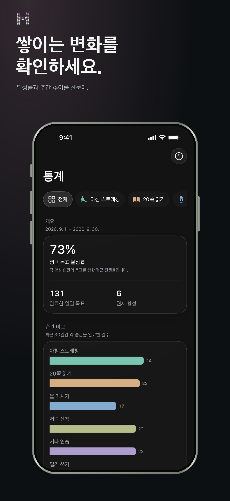
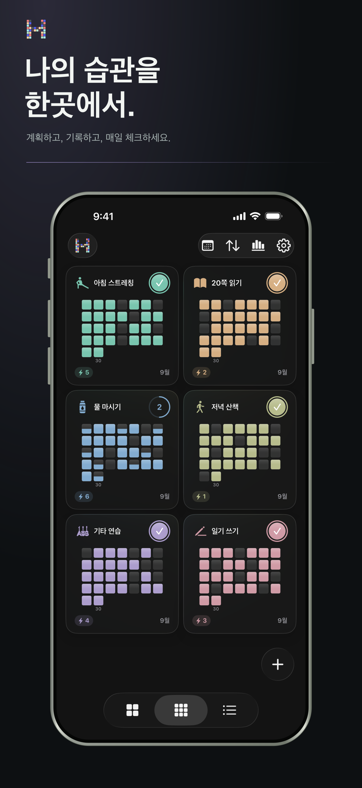
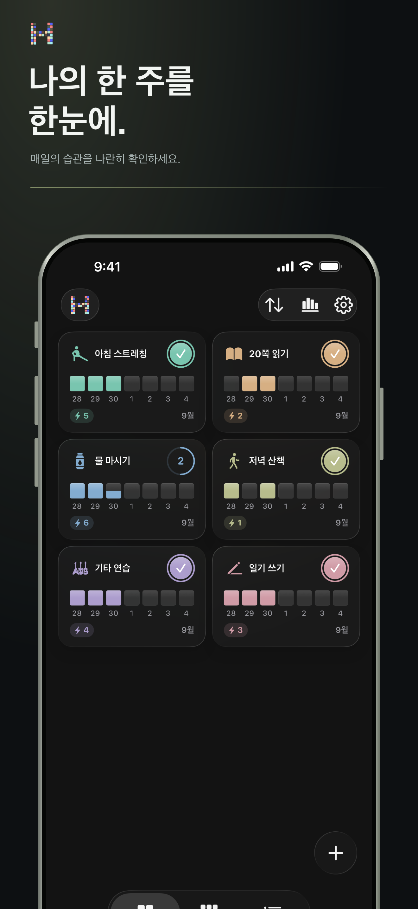

압박이 아닌 패턴
무엇이 다시 돌아오게 하는지 알아보세요.
루틴을 복잡한 표로 만들지 않고도 연속 기록, 달성률, 장기 패턴을 확인할 수 있습니다.
- 현재 및 최고 연속 기록
- 달성 추세와 분포
- 주간·월간·연간 흐름
iPhone을 위한 HabitBit
복잡함 없이 매일의 습관을 만드세요. 한 번의 탭으로 체크하고, 일주일과 한 달, 한 해 동안 쌓인 루틴, 연속 기록, 진행 상황을 확인할 수 있습니다.
App Store에서App Store계정이 필요 없습니다. 습관 기록은 기기에 보관됩니다.
HabitBit의 생각
동기는 기억하기 어렵습니다. 하지만 매일의 흔적이 남으면 나의 발전을 더 쉽게 믿을 수 있습니다.

다시 돌아오도록 설계했습니다.
하나의 습관. 세 가지 거리.
이번 주
집중된 주간 보드는 오늘을 가까이 두면서도 만들어 가는 리듬을 놓치지 않게 합니다.

꾸준함을 위한 시각적 시스템
HabitBit은 iPhone용 심플한 데일리 습관 트래커이자 루틴 플래너입니다. 한 번의 체크를 선명한 주간·월간·연간 그리드로 바꿔, 일상을 복잡하게 만들지 않고 연속 기록과 목표를 관리할 수 있습니다.
만들고 싶은 루틴마다 이름, 아이콘, 색상, 일정과 선택 알림을 설정하세요.
한 번의 탭으로 습관을 완료하세요. 모든 달성이 시각적 기록 속 하나의 칸이 됩니다.
주간, 월간, 연간 보기를 오가며 연속 기록, 놓친 날과 장기적인 꾸준함을 이해하세요.
기본부터 비공개
HabitBit은 계정을 요구하지 않습니다. 습관 이름, 메모와 완료 기록은 기기에 로컬로 저장됩니다.
알아두면 좋은 점
HabitBit은 iPhone용 심플한 시각적 습관 트래커이자 루틴 플래너입니다. 매일의 체크가 주간·월간·연간 그리드로 쌓여 루틴, 연속 기록과 장기 진행 상황을 쉽게 보여줍니다.
아니요. 계정을 만들지 않고 바로 습관 관리를 시작할 수 있습니다. 습관 기록은 기기에 로컬로 저장됩니다.
운동, 독서, 물 마시기, 공부, 명상 또는 반복하는 어떤 행동이든 데일리 습관, 연속 기록, 목표와 루틴으로 관리할 수 있습니다. 습관마다 아이콘, 색상, 일정과 알림을 따로 설정할 수 있습니다.
네. HabitBit은 홈 화면과 잠금 화면 위젯, 예약 알림, 포모도로 방식의 집중 타이머를 제공합니다.
HabitBit은 무료로 다운로드하고 사용할 수 있습니다. 선택 사항인 Pro 구매로 무제한 습관, 고급 통계, Pro 위젯, 파일 내보내기와 가져오기, 추가 테마 색상을 이용할 수 있습니다. 플랜과 현지 가격은 앱 안에 표시됩니다.
초기 App Store 리뷰
“매일의 루틴을 꾸준히 이어가는 데 도움이 됩니다. 좋아요.”
“제 삶을 더 편하게 만들어 줄 앱이에요. 감사합니다.”
“처음부터 이런 결과가 나올 줄은 몰랐어요!”
App Store에 게시된 확인된 리뷰입니다.